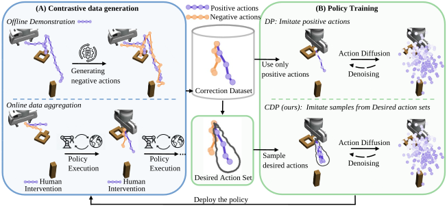

Learning Action Diffusion through Corrections
Under Review

Abstract. Diffusion policies have recently emerged as a powerful framework for robotic manipulation. However, like other behavior cloning approaches, diffusion policies remain vulnerable to covariate shift, often requiring human-in-the-loop interventions to correct failures during deployment. These interactions naturally provide paired supervision in the form of the robot’s erroneous actions and the human’s corrective responses. Yet existing data aggregation pipelines and standard behavior cloning losses largely ignore this negative signal, leading to overfitting to positive actions and an increasing reliance on expert data that is costly to collect. To address this limitation, we propose Contrastive Diffusion Policy (CDP), a novel algorithm that utilizes contrastive action-chunk data to guide the policy improvement. CDP creates a desired action set from a positive action chunk and a negative action chunk, and designs a training pipeline to encourage the diffusion polices to align with the set. Through extensive experiments across multiple robotic manipulation tasks, we demonstrate that CDP improves robustness under covariate shift and induces higher-quality datasets, leading to more efficient and reliable policy learning from human-in-the-loop corrections.
Highlights
<Construction of desired aciton set for action-chunks
Sampling desired action-chunks
Ball catching: Quick coordination with
partial feedback to the end effector
or the robot hand.
Water pouring: Learning full pose
control to precisely pour
liquid (marbles) into a bowl.
Insert-T: Learning long-horizon multi-
modal task that inserts the T-shape
object into the U-shape object.
Simulation benchmarks
Our CLIC method outperforms prior state-of-the-art on 4 tasks, where we consider various feedback types for each task. Examples of the trajectory rollout of CLIC method (after training) using accurate demonstration are shown in the video below:
Real World Insert-T Task
The Insert-T task requires the robot to insert a T-shaped object into a U-shaped object by pushing. We categorize the task into three difficulty levels, and examples of the post-training policy rollouts for each level are shown below:
Insert-T 'Easy' category:
Insert-T 'Medium' category:
Insert-T 'Hard' category:
Team
Omited for anonymous review.
Acknowledgements
Omited for anonymous review.